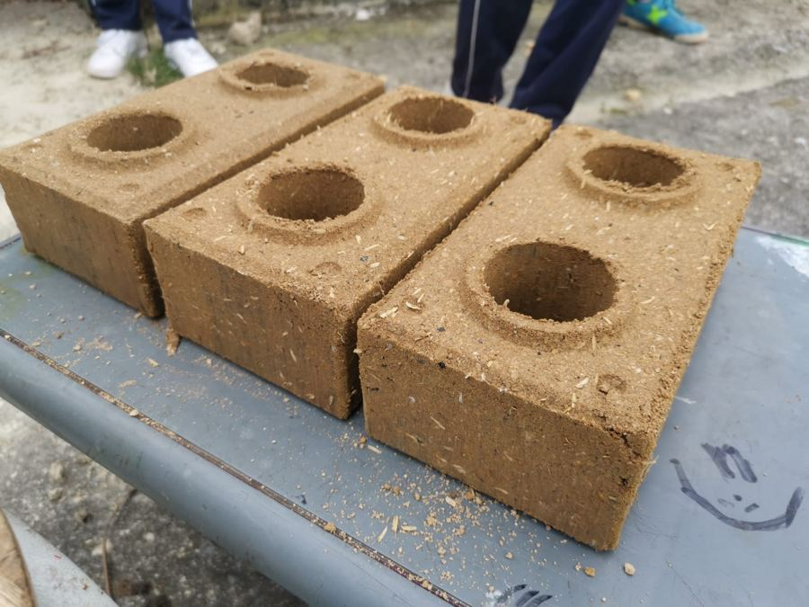
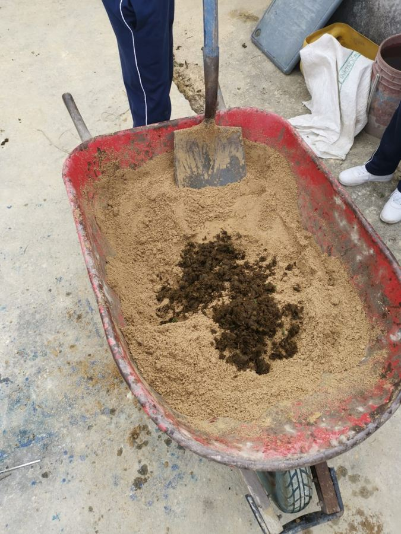
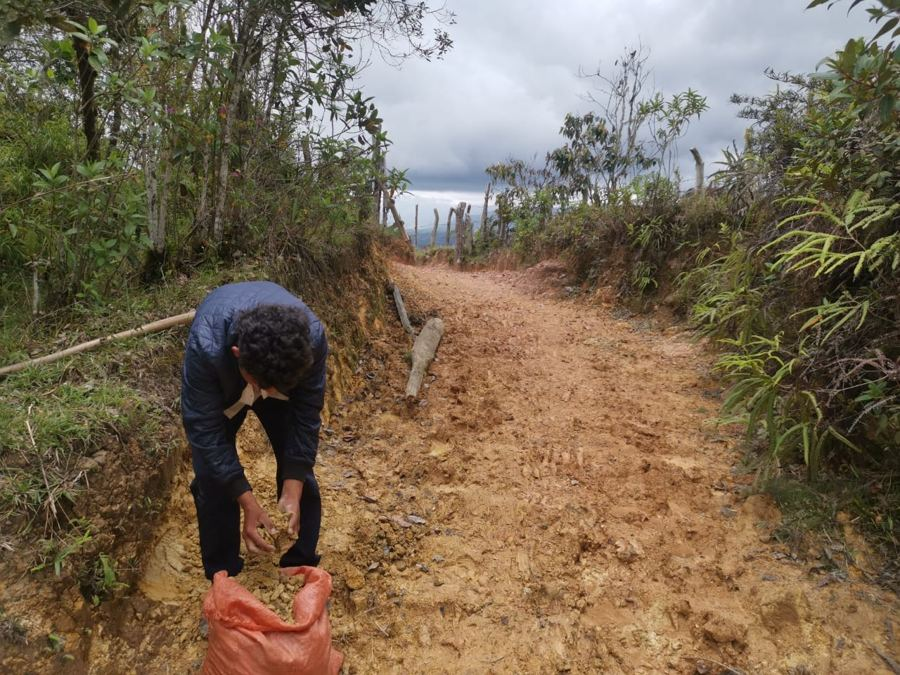
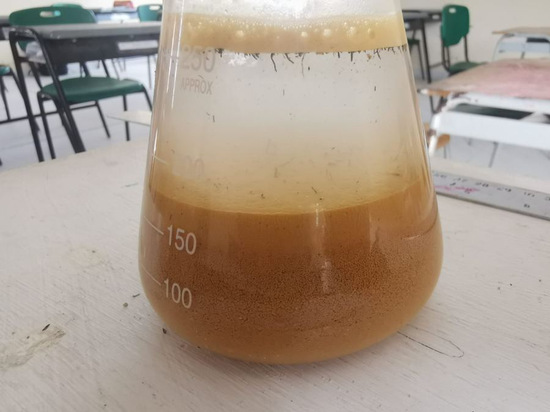

Tema
Aprovechamiento de materiales y educación ambiental, trabajados a través del diseño de un ecoladrillo. En el proyecto del autor, estos ladrillos se elaboran con tierra, cemento, cascarilla de arroz, estiércol de caballo y otros compuestos naturales o residuales.
Los ecoladrillos son el contexto de aprendizaje. La app los usa para que el estudiante relacione conceptos de ciencias (mezclas, propiedades de los materiales, residuos) con su entorno y reflexione sobre qué se puede reutilizar.
Alcance: la propuesta es pedagógica. No afirma que los ladrillos cuenten con validación estructural o de ingeniería, y el simulador de la app es una representación didáctica, no un ensayo técnico.




Público objetivo y contexto educativo
Estudiantes de educación básica secundaria (grados 8 y 9), con énfasis en instituciones rurales o de zonas con acceso limitado a laboratorios. En esos grados ya se trabajan proporciones, mezclas y propiedades de la materia, que son las ideas que la app necesita.
La propuesta se piensa para celular, que suele ser el dispositivo disponible, y para conexión inestable: el contenido se descarga una vez y se consulta sin internet. Puede adaptarse a otras instituciones cambiando los materiales y las fotos locales, y también puede acompañar una clase de ciencias o de tecnología como complemento.
Problema de aprendizaje
En las clases de ciencias, las ideas de mezcla, propiedad de un material y aprovechamiento de residuos se explican con definiciones y ejemplos de libro, y pocas veces se conectan con los materiales que el estudiante conoce de su entorno. Sin laboratorio o con poco tiempo de práctica, quedan como conceptos que se memorizan y no se usan para tomar decisiones.
La app busca atender esa necesidad: darle al estudiante una situación concreta, diseñar un ecoladrillo con materiales reales, para que aplique esos conceptos, observe, decida y explique sus razones, con la tecnología móvil como apoyo para quienes no tienen laboratorio.
Resultado de aprendizaje
Al finalizar la ruta, el estudiante diseña una mezcla de ecoladrillo a partir de las propiedades de sus componentes y justifica su elección con lo que observó y con criterios ambientales.
Es medible porque se puede comprobar en la ficha: qué componentes eligió, en qué proporción y qué razones da. El verbo "diseñar" corresponde al nivel de creación de la taxonomía de Bloom revisada (Anderson y Krathwohl, 2001), alcanzable en secundaria cuando la actividad es guiada.
Evidencia de aprendizaje
Una ficha de diseño dentro de la app con cuatro partes: la mezcla elegida (componentes y proporciones), las pruebas simuladas que hizo antes de decidir, la justificación de la elección y una reflexión breve sobre qué residuos aprovecha su mezcla.
Secuencia didáctica
- Exploración. El estudiante observa muestras de su entorno (tierra, arena, cascarilla, estiércol) con fotos y preguntas como "¿qué pasa si mojas un puñado de tierra?", y guarda sus observaciones. Se activan sus saberes previos y se plantea el reto de diseñar un ecoladrillo. Corresponde a la pantalla 3 de la app.
- Aprendizaje. Microlecciones cortas, una por componente, que explican qué aporta cada uno a una mezcla y qué significa reutilizar un residuo. Cada microlección termina con una pregunta de comprensión que da retroalimentación al instante. Corresponde a la pantalla 4.
- Práctica. En un simulador didáctico, el estudiante cambia las proporciones, compara los resultados de varios intentos y ajusta su decisión. Después completa su ficha de diseño. Es indagación guiada, con ensayo, observación y corrección. Corresponde a las pantallas 5 y 6.
La secuencia sigue una lógica de aprendizaje basado en retos: el reto es una pregunta de diseño y cada momento aporta lo necesario para el siguiente. La práctica pide aplicar lo visto en el aprendizaje y retomar lo observado en la exploración.
Estrategia de evaluación
Evaluación formativa durante la ruta, con una valoración final de la ficha mediante rúbrica.
Se justifica así: el resultado es un diseño, y un diseño mejora al revisarlo, algo que una prueba final de selección múltiple no mide bien. Además, la retroalimentación oportuna sobre la tarea es una de las prácticas con mayor efecto sobre el aprendizaje (Black y Wiliam, 1998), y en contextos con poco acompañamiento la app debe darla en el momento en que el estudiante se equivoca.
Seguimiento: barra de progreso por estación, historial de las mezclas probadas y un resumen para el docente con las estaciones completadas. Retroalimentación: mensajes inmediatos en las preguntas de comprensión y en el simulador, y comentarios del docente sobre la ficha.
| Criterio de la ficha | Inicial | En proceso | Logrado |
|---|---|---|---|
| Mezcla y proporciones | Nombra componentes sin proporciones | Da proporciones que no se relacionan con sus pruebas | Da proporciones coherentes con sus pruebas |
| Justificación | Afirma que la mezcla "es buena" sin razones | Usa una propiedad de un componente | Explica con propiedades por qué descartó otra mezcla |
| Reflexión ambiental | No menciona residuos | Nombra el residuo que usa | Explica qué aprovecha y qué problema ambiental atiende |
Relación entre el diseño instruccional y la app
| Elemento del diseño | Funcionalidad prevista | Pantalla |
|---|---|---|
| Exploración | Registro de observaciones con foto y opciones de respuesta | 3 |
| Aprendizaje | Microlecciones por componente y preguntas con retroalimentación inmediata | 4 |
| Práctica | Simulador didáctico de proporciones e historial de intentos | 5 |
| Evidencia | Ficha de diseño que se puede descargar | 6 |
| Seguimiento | Mapa de ruta con barra de progreso | 2 |
Las seis pantallas se dibujan en el wireframe.